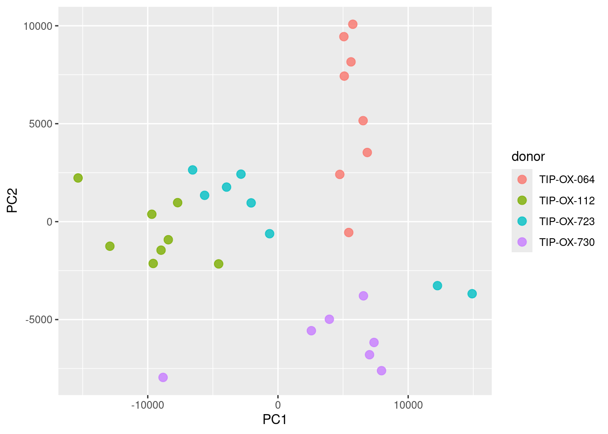
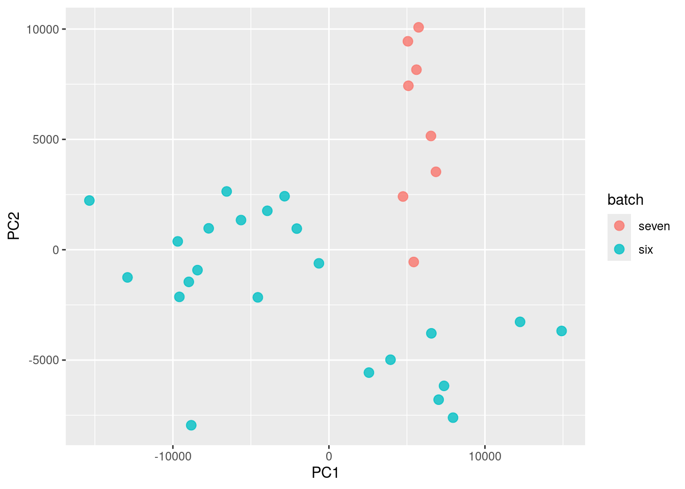
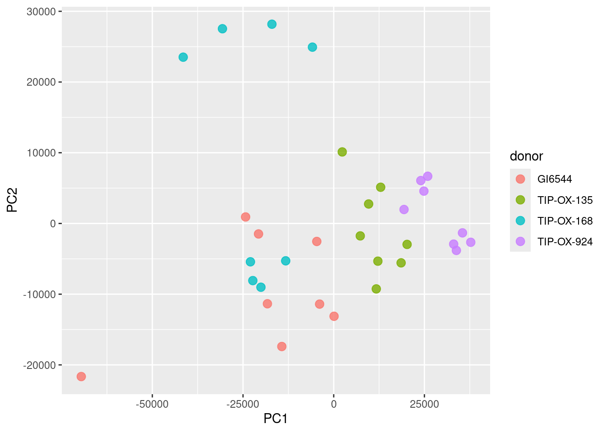
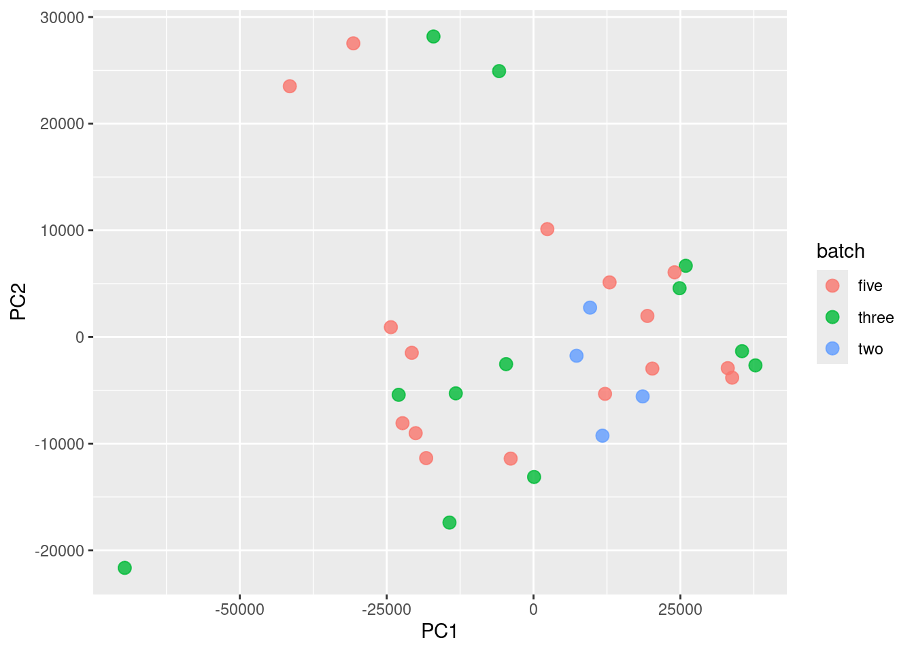
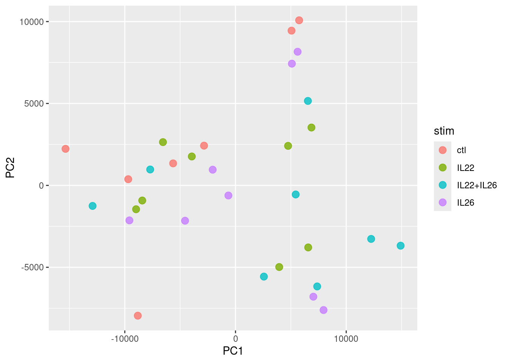
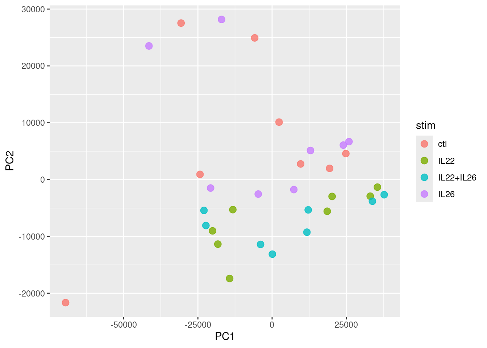
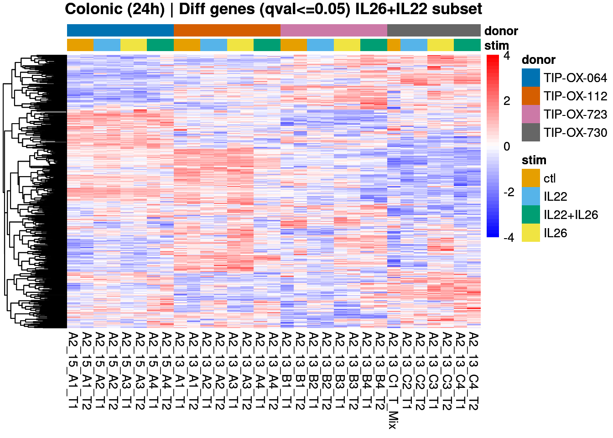
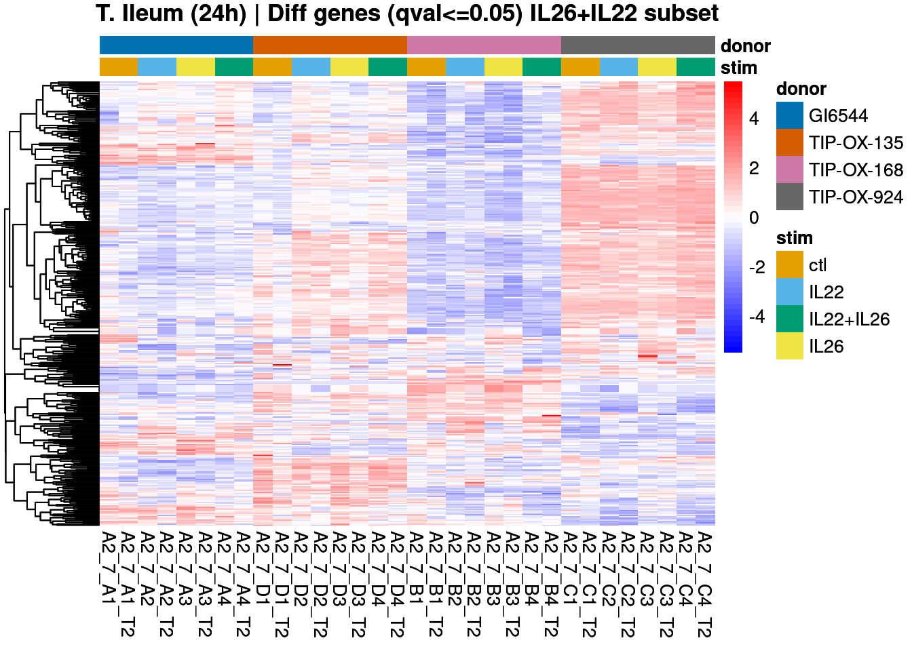

module load kallisto/0.46.1
kallisto quant -i /project/thelior_project/vchong/ensembl/release-115/kallisto-cDNA/cdna-release-115.idx -o ./A2_17_A4_T2 -b 100 -t 4 \
/project/thelior_project/vchong/novogene_exp8/fastp/A2_17_A4_T2.R1.fq.gz \
/project/thelior_project/vchong/novogene_exp8/fastp/A2_17_A4_T2.R2.fq.gz5. Differential expression - 24h stim, Healthy donors
V Chong | vanessa.chong@rdm.ox.ac.uk | 07 January 2026
Preamble
- Bulk RNAseq samples from healthy, patient-derived organoids of the colon and terminal ileum (TI).
- Libraries were prepared and sequenced in several batches.
- Organoids were stimulated with IL22 only, both IL22 and IL26, or IL26 only. Controls were unstimulated.
- Stimulation was performed for 24 or 48 hours.
Points-of-note
- Samples are spread across three batches, with two technical replicates (
_T1and_T2) per donor i.e. same RNA, sampled twice to make libraries for sequencing.
These are all reflected in the sample metadata called into the analysis later.
Analysis
Consider the impact of experimental covariates e.g. donor, batch. Statistically test for genes that are affected between the stimulation conditions while controlling for differences due to these covariates. This gives a broad view of the genes and/or pathways that IL22 and/or IL26 could be affecting.
Pairwise comparison between each IL stimulation vs control.
Pseudoalignment and estimation of transcript abundances
Kallisto with bootstraps (-b 100) enabled for downstream sleuth differential expression.
Differential expression analysis
Reference - “Differential analysis using p-value aggregation, on multiple conditions and covariates”
Initialise R environment
##### Set libPaths #####
.libPaths(c("/home/chongmorrison/R/x86_64-pc-linux-gnu-library/4.5",
"/home/chongmorrison/R/4.5.0-Bioc3.21"))
.libPaths() # check .libPaths[1] "/home/chongmorrison/R/x86_64-pc-linux-gnu-library/4.5"
[2] "/home/chongmorrison/R/4.5.0-Bioc3.21"
[3] "/usr/local/lib/R/site-library"
[4] "/usr/lib/R/site-library"
[5] "/usr/lib/R/library" ##### Memory/parallel cores usage #####
options(Ncpus = 12) # adjust no. of cores for base R
getOption("Ncpus", 1L)[1] 12##### Import all required packages #####
# data-wrangling and plots
library(tidyverse)
#library(RColorBrewer)
#library(viridis)
#library(ggpubr)
library(SummarizedExperiment)
library(dittoSeq)
# analysis
library(biomaRt)
library(PCAtools)
library(sleuth)
library(gplots) # for Venn diagrams
library(rbioapi)
# to cite packages
library(grateful)
##### Set seed for reproducibility of random sampling #####
set.seed(584)Ensembl annotations - release 115
# run once and save locally for later use
ensembl <- biomaRt::useEnsembl(biomart = "genes", dataset = "hsapiens_gene_ensembl", version = 115)
annotations <- biomaRt::getBM(mart = ensembl, attributes=c("ensembl_transcript_id", "transcript_version", "external_gene_name", "ensembl_gene_id"))
annotations$ensembl_transcript_id_version <- paste(annotations$ensembl_transcript_id, annotations$transcript_version, sep=".")
## transcript-to-gene mapping
ttg <- dplyr::rename(annotations, target_id = ensembl_transcript_id_version, ens_gene = ensembl_gene_id, ext_gene = external_gene_name)
ttg <- dplyr::select(ttg, c('target_id', 'ens_gene', 'ext_gene'))
saveRDS(ttg, file = "./ttg115.rds")ttg <- readRDS("./ttg115.rds")Load sample metadata
metadata <- read.table(file = './metadata_06.01.26.csv', sep = ',', header=TRUE)
head(metadata) sample donor donor_status tissue tissue_subregion stim time batch
1 A2_7_A1 GI6544 Healthy TI ctl 24h three
2 A2_7_A2 GI6544 Healthy TI IL22 24h three
3 A2_7_A3 GI6544 Healthy TI IL26 24h three
4 A2_7_A4 GI6544 Healthy TI IL22+IL26 24h three
5 A2_7_B1 TIP-OX-168 Healthy TI ctl 24h three
6 A2_7_B2 TIP-OX-168 Healthy TI IL22 24h three
misc
1
2
3
4
5
6
path
1 /home/chongmorrison/Dropbox/VCM-StarBook/ResearchProjects/theliorbio/analyses/rnaseq/kallisto_v0.46.1_e115/A2_7_A1/abundance.h5
2 /home/chongmorrison/Dropbox/VCM-StarBook/ResearchProjects/theliorbio/analyses/rnaseq/kallisto_v0.46.1_e115/A2_7_A2/abundance.h5
3 /home/chongmorrison/Dropbox/VCM-StarBook/ResearchProjects/theliorbio/analyses/rnaseq/kallisto_v0.46.1_e115/A2_7_A3/abundance.h5
4 /home/chongmorrison/Dropbox/VCM-StarBook/ResearchProjects/theliorbio/analyses/rnaseq/kallisto_v0.46.1_e115/A2_7_A4/abundance.h5
5 /home/chongmorrison/Dropbox/VCM-StarBook/ResearchProjects/theliorbio/analyses/rnaseq/kallisto_v0.46.1_e115/A2_7_B1/abundance.h5
6 /home/chongmorrison/Dropbox/VCM-StarBook/ResearchProjects/theliorbio/analyses/rnaseq/kallisto_v0.46.1_e115/A2_7_B2/abundance.h5Explore experimental covariates vs conditions
Extract sample-of-interest i.e. Healthy colonic and TI samples. Exclude IL24_exp samples.
metadata.CO <- subset(metadata, donor_status == "Healthy" & tissue == "colonic" & !misc == "IL24_exp")
metadata.TI <- subset(metadata, donor_status == "Healthy" & tissue == "TI" & !misc == "IL24_exp")
# Alternative code
#metadata.CO <- metadata %>% filter(donor_status == "Healthy", tissue == "colonic", !misc == "IL24_exp")Outputs not shown to avoid heavy re-computation of different PCAs and sleuth_fit attempts - learned that samples form overlapping groups based on time, batch, and donor. So, going forward by analysing 24h and 48h separately, and fit model where donor is specified as the covariate (which also accounts for the batch covariate) - see PCAs below.
Split datasets by time.
metadata.CO.24h <- subset(metadata.CO, grepl("24h", time))
metadata.CO.48h <- subset(metadata.CO, grepl("48h", time))
rownames(metadata.CO.24h) <- NULL
rownames(metadata.CO.48h) <- NULLmetadata.TI.24h <- subset(metadata.TI, grepl("24h", time))
metadata.TI.48h <- subset(metadata.TI, grepl("48h", time))
rownames(metadata.TI.24h) <- NULL
rownames(metadata.TI.48h) <- NULL24 hours - colonic and TI
Build sleuth object from metadata and kallisto abundances.
target_mapping = transcript groupings into genes, where aggregation_column is the column in target_mapping used to aggregate the transcripts. When both target_mapping and aggregation_column are provided, sleuth will automatically run in gene mode, returning gene differential expression results that came from the aggregation of transcript p-values.
transform_fun_counts (see here) so that downstream output fold changes are log2.
# run this on the command line outside of RStudio to make use of num_cores
so.CO.24 <- sleuth_prep(metadata.CO.24h,
target_mapping = ttg, aggregation_column = "ens_gene",
extra_bootstrap_summary = TRUE,
read_bootstrap_tpm = TRUE,
transform_fun_counts = function(x) log2(x + 0.5),
num_cores = 2)
so.TI.24 <- sleuth_prep(metadata.TI.24h,
target_mapping = ttg, aggregation_column = "ens_gene",
extra_bootstrap_summary = TRUE,
read_bootstrap_tpm = TRUE,
transform_fun_counts = function(x) log2(x + 0.5),
num_cores = 2)
# save sleuth objects to reload without recomputing bootstraps
saveRDS(so.CO.24, file = "./05_diffexp_sleuth-so-colonic-24h.rds")
saveRDS(so.TI.24, file = "./05_diffexp_sleuth-so-TI-24h.rds")so.CO.24 <- readRDS("./05_diffexp_sleuth-so-colonic-24h.rds")
so.TI.24 <- readRDS("./05_diffexp_sleuth-so-TI-24h.rds")# covariates
plot_pca(so.CO.24, units = "tpm", color_by = "donor")Warning: `aes_string()` was deprecated in ggplot2 3.0.0.
ℹ Please use tidy evaluation idioms with `aes()`.
ℹ See also `vignette("ggplot2-in-packages")` for more information.
ℹ The deprecated feature was likely used in the sleuth package.
Please report the issue at <https://github.com/pachterlab/sleuth/issues>.
plot_pca(so.CO.24, units = "tpm", color_by = "batch")
plot_pca(so.TI.24, units = "tpm", color_by = "donor")
plot_pca(so.TI.24, units = "tpm", color_by = "batch")
# condition
plot_pca(so.CO.24, units = "tpm", color_by = "stim")
plot_pca(so.TI.24, units = "tpm", color_by = "stim")
Test for differentially-expressed genes - multi-condition
Fit a reduced model, which includes the parameters corresponding to experimental covariates we are controlling for i.e. donor (which will account for batch).
so.CO.24 <- sleuth_fit(so.CO.24, ~donor, "reduced")
so.TI.24 <- sleuth_fit(so.TI.24, ~donor, "reduced")Fit the full model which includes all parameters including stim.
so.CO.24 <- sleuth_fit(so.CO.24, ~donor + stim, "full")
so.TI.24 <- sleuth_fit(so.TI.24, ~donor + stim, "full")# Re-save sleuth objects to reload without recomputing everything
saveRDS(so.CO.24, file = "./05_diffexp_sleuth-so-colonic-24h.rds")
saveRDS(so.TI.24, file = "./05_diffexp_sleuth-so-TI-24h.rds")Check fitted models. Note that ctl is not shown as a coefficient for stim, as it is denoted as the base level (the level not shown is the base level). sleuth automatically takes the first level (alphabetical by default) in the variable being tested to compare other conditions with.
so.CO.24 <- readRDS("./05_diffexp_sleuth-so-colonic-24h.rds")
so.TI.24 <- readRDS("./05_diffexp_sleuth-so-TI-24h.rds")models(so.CO.24)[ reduced ]
formula: ~donor
data modeled: obs_counts
transform sync'ed: TRUE
coefficients:
(Intercept)
donorTIP-OX-112
donorTIP-OX-723
donorTIP-OX-730
[ full ]
formula: ~donor + stim
data modeled: obs_counts
transform sync'ed: TRUE
coefficients:
(Intercept)
donorTIP-OX-112
donorTIP-OX-723
donorTIP-OX-730
stimIL22
stimIL22+IL26
stimIL26models(so.TI.24)[ reduced ]
formula: ~donor
data modeled: obs_counts
transform sync'ed: TRUE
coefficients:
(Intercept)
donorTIP-OX-135
donorTIP-OX-168
donorTIP-OX-924
[ full ]
formula: ~donor + stim
data modeled: obs_counts
transform sync'ed: TRUE
coefficients:
(Intercept)
donorTIP-OX-135
donorTIP-OX-168
donorTIP-OX-924
stimIL22
stimIL22+IL26
stimIL26# in case one needs to set/change base level. Do this before sleuth_prep:
metadata$stim <- relevel(factor(metadata$stim), ref = "ctl")Then compare the full model to the reduced model with the likelihood ratio test (LRT). Using the likelihood ratio test, sleuth identifies genes whose abundances are significantly better explained when IL treatment (stim) is taken into account, while accounting for baseline differences that may be explained by donor (and/or batch).
so.CO.24 <- sleuth_lrt(so.CO.24, "reduced", "full")
so.TI.24 <- sleuth_lrt(so.TI.24, "reduced", "full")Use the full model with Wald test (WT) to compute b beta values, which approximates the log2 fold changes between conditions.
so.CO.24 <- sleuth_wt(so.CO.24, which_beta = "stimIL22", which_model = "full") # IL22 vs ctl
so.CO.24 <- sleuth_wt(so.CO.24, which_beta = "stimIL22+IL26", which_model = "full") # IL22+26 vs ctl
so.CO.24 <- sleuth_wt(so.CO.24, which_beta = "stimIL26", which_model = "full") # IL26 vs ctl
so.TI.24 <- sleuth_wt(so.TI.24, which_beta = "stimIL22", which_model = "full") # IL22 vs ctl
so.TI.24 <- sleuth_wt(so.TI.24, which_beta = "stimIL22+IL26", which_model = "full") # IL22+26 vs ctl
so.TI.24 <- sleuth_wt(so.TI.24, which_beta = "stimIL26", which_model = "full") # IL26 vs ctlObtain gene- and transcript-level differential expression results from LRT. Sleuth uses the p-values from comparing transcripts to make a gene-level determination and perform gene differential expression.
sleuth_table_gene.CO.24 <- sleuth_results(so.CO.24, "reduced:full", "lrt", show_all = FALSE)
sleuth_table_gene.CO.24 <- dplyr::filter(sleuth_table_gene.CO.24, qval <= 0.01)
head(sleuth_table_gene.CO.24, 20) target_id ext_gene num_aggregated_transcripts sum_mean_obs_counts
1 ENSG00000187908 DMBT1 19 142.23352
2 ENSG00000197249 SERPINA1 20 102.38686
3 ENSG00000079385 CEACAM1 17 126.87574
4 ENSG00000196136 SERPINA3 11 54.55081
5 ENSG00000123843 C4BPB 17 96.93094
6 ENSG00000105388 CEACAM5 33 298.33941
7 ENSG00000137757 CASP5 10 75.87572
8 ENSG00000205403 CFI 10 54.55490
9 ENSG00000196352 CD55 24 155.80428
10 ENSG00000162366 PDZK1IP1 7 39.74823
11 ENSG00000118777 ABCG2 22 149.79011
12 ENSG00000143013 LMO4 9 71.72274
13 ENSG00000162645 GBP2 10 70.54945
14 ENSG00000003400 CASP10 10 65.23354
15 ENSG00000105835 NAMPT 25 133.81505
16 ENSG00000150782 IL18 10 67.99917
17 ENSG00000150593 PDCD4 23 176.12120
18 ENSG00000198363 ASPH 46 289.26320
19 ENSG00000188257 PLA2G2A 7 33.61909
20 ENSG00000185499 MUC1 8 61.39170
pval qval
1 4.992340e-219 8.214896e-215
2 3.124718e-165 2.570861e-161
3 2.224991e-137 1.220408e-133
4 8.072924e-121 3.320999e-117
5 2.412386e-111 7.939162e-108
6 8.057151e-100 2.209674e-96
7 5.266487e-94 1.238001e-90
8 4.786184e-80 9.844582e-77
9 6.877948e-77 1.257518e-73
10 2.378539e-73 3.913886e-70
11 2.424107e-72 3.626243e-69
12 1.727130e-66 2.368327e-63
13 1.081408e-63 1.368814e-60
14 4.148585e-63 4.876069e-60
15 1.465950e-62 1.608147e-59
16 1.525094e-61 1.568464e-58
17 1.494298e-60 1.446393e-57
18 2.631839e-60 2.405940e-57
19 2.511710e-59 2.175273e-56
20 8.434281e-59 6.939304e-56sleuth_table_gene.TI.24 <- sleuth_results(so.TI.24, "reduced:full", "lrt", show_all = FALSE)
sleuth_table_gene.TI.24 <- dplyr::filter(sleuth_table_gene.TI.24, qval <= 0.01)
head(sleuth_table_gene.TI.24, 20) target_id ext_gene num_aggregated_transcripts sum_mean_obs_counts
1 ENSG00000187908 DMBT1 20 179.42941
2 ENSG00000197249 SERPINA1 29 145.77683
3 ENSG00000196136 SERPINA3 13 56.02824
4 ENSG00000205403 CFI 11 55.93523
5 ENSG00000118777 ABCG2 19 145.12802
6 ENSG00000172023 REG1B 5 21.82107
7 ENSG00000118849 RARRES1 9 76.86711
8 ENSG00000115386 REG1A 5 23.99968
9 ENSG00000137757 CASP5 10 73.96533
10 ENSG00000106258 CYP3A5 18 129.08029
11 ENSG00000079385 CEACAM1 15 101.33753
12 ENSG00000105388 CEACAM5 27 180.51121
13 ENSG00000104537 ANXA13 7 57.64509
14 ENSG00000160868 CYP3A4 13 101.76640
15 ENSG00000198363 ASPH 45 289.01737
16 ENSG00000123843 C4BPB 15 89.05875
17 ENSG00000135052 GOLM1 12 85.73444
18 ENSG00000137752 CASP1 14 87.87234
19 ENSG00000185499 MUC1 5 34.25878
20 ENSG00000119125 GDA 8 65.71947
pval qval
1 1.817069e-282 2.890230e-278
2 2.384288e-173 1.896224e-169
3 6.152003e-168 3.261792e-164
4 1.298435e-99 5.163226e-96
5 1.353907e-88 4.307051e-85
6 1.356431e-86 3.595899e-83
7 4.141176e-84 9.409935e-81
8 8.316396e-84 1.653507e-80
9 7.647804e-77 1.351622e-73
10 1.081269e-75 1.719867e-72
11 2.338839e-71 3.381961e-68
12 1.720017e-70 2.279882e-67
13 4.036103e-68 4.938327e-65
14 9.819928e-68 1.115684e-64
15 2.758246e-65 2.924844e-62
16 6.321843e-64 6.284702e-61
17 2.792533e-60 2.612825e-57
18 2.559534e-57 2.261775e-54
19 3.639299e-56 3.046668e-53
20 5.039656e-56 4.008039e-53# without gene aggregation
sleuth_table_tx.CO.24 <- sleuth_results(so.CO.24, "reduced:full", "lrt", show_all = FALSE, pval_aggregate = FALSE)
sleuth_table_tx.CO.24 <- dplyr::filter(sleuth_table_tx.CO.24, qval <= 0.01)
head(sleuth_table_tx.CO.24, 20) target_id ens_gene ext_gene pval qval
1 ENST00000438495.6 ENSG00000111912 NCOA7 4.227179e-28 4.397153e-23
2 ENST00000440909.5 ENSG00000197249 SERPINA1 8.720124e-27 4.535380e-22
3 ENST00000306390.7 ENSG00000171236 LRG1 7.047626e-26 2.443670e-21
4 ENST00000319264.4 ENSG00000153714 LURAP1L 2.213148e-24 4.980846e-20
5 ENST00000260315.8 ENSG00000137757 CASP5 2.394154e-24 4.980846e-20
6 ENST00000296695.10 ENSG00000164266 SPINK1 4.354085e-24 7.548604e-20
7 ENST00000433503.2 ENSG00000241534 CFB 3.326937e-23 2.883927e-19
8 ENST00000419411.6 ENSG00000242335 CFB 3.326937e-23 2.883927e-19
9 ENST00000427888.2 ENSG00000239754 CFB 3.326937e-23 2.883927e-19
10 ENST00000436692.2 ENSG00000243570 CFB 3.326937e-23 2.883927e-19
11 ENST00000388711.7 ENSG00000135052 GOLM1 3.045899e-23 2.883927e-19
12 ENST00000956502.1 ENSG00000170786 SDR16C5 3.178653e-23 2.883927e-19
13 ENST00000368909.7 ENSG00000187908 DMBT1 7.715609e-23 5.350569e-19
14 ENST00000619379.1 ENSG00000187908 DMBT1 7.715609e-23 5.350569e-19
15 ENST00000652446.2 ENSG00000187908 DMBT1 7.715609e-23 5.350569e-19
16 ENST00000286186.11 ENSG00000003400 CASP10 9.080539e-23 5.903542e-19
17 ENST00000622719.2 ENSG00000278788 SBNO2 1.142932e-22 6.604938e-19
18 ENST00000438103.6 ENSG00000064932 SBNO2 1.142932e-22 6.604938e-19
19 ENST00000296026.4 ENSG00000163734 CXCL3 1.268716e-22 6.945954e-19
20 ENST00000954626.1 ENSG00000198959 TGM2 1.976420e-22 1.027946e-18
test_stat rss degrees_free mean_obs var_obs tech_var
1 130.4966 29.52158 3 12.084894 1.0944163 0.0008856516
2 124.3961 82.20801 3 10.293912 3.2383254 0.0051346405
3 120.1829 21.34858 3 11.300405 0.8521582 0.0010731811
4 113.2305 26.32528 3 10.015456 1.0534718 0.0024491499
5 113.0719 44.28977 3 9.725679 1.7049770 0.0131370093
6 111.8652 68.35151 3 9.307335 2.6509003 0.0058102116
7 107.7615 24.27782 3 10.139516 0.9792850 0.0023797581
8 107.7615 24.27782 3 10.139516 0.9792850 0.0023797581
9 107.7615 24.27782 3 10.139516 0.9792850 0.0023797581
10 107.7615 24.27782 3 10.139516 0.9792850 0.0023797581
11 107.9396 24.86616 3 14.295909 0.8636854 0.0026884639
12 107.8535 17.54399 3 9.898989 0.9007195 0.0051611253
13 106.0635 312.20089 3 12.141425 11.7490765 0.0268529988
14 106.0635 312.20089 3 12.141425 11.7490765 0.0268529988
15 106.0635 312.20089 3 12.141425 11.7490765 0.0268529988
16 105.7347 15.53636 3 11.771446 0.5443946 0.0018349074
17 105.2702 46.14465 3 9.376390 1.6130406 0.0295113253
18 105.2702 46.14465 3 9.376390 1.6130406 0.0295113253
19 105.0594 35.60152 3 9.424887 1.7355558 0.0044935803
20 104.1645 110.65736 3 12.739082 3.9817160 0.0065405475
sigma_sq smooth_sigma_sq final_sigma_sq
1 1.0925060 0.02408155 1.0925060
2 3.0396066 0.03418577 3.0396066
3 0.7896149 0.02661705 0.7896149
4 0.9725614 0.03742537 0.9725614
5 1.6272249 0.04147812 1.6272249
6 2.5257272 0.04879436 2.5257272
7 0.8967987 0.03590843 0.8967987
8 0.8967987 0.03590843 0.8967987
9 0.8967987 0.03590843 0.8967987
10 0.8967987 0.03590843 0.8967987
11 0.9182804 0.02958226 0.9182804
12 0.6446163 0.03896478 0.6446163
13 11.5361431 0.02399149 11.5361431
14 11.5361431 0.02399149 11.5361431
15 11.5361431 0.02399149 11.5361431
16 0.5735859 0.02479867 0.5735859
17 1.6795498 0.04745282 1.6795498
18 1.6795498 0.04745282 1.6795498
19 1.3140814 0.04654407 1.3140814
20 4.0918801 0.02374545 4.0918801# without gene aggregation
sleuth_table_tx.TI.24 <- sleuth_results(so.TI.24, "reduced:full", "lrt", show_all = FALSE, pval_aggregate = FALSE)
sleuth_table_tx.TI.24 <- dplyr::filter(sleuth_table_tx.TI.24, qval <= 0.01)
head(sleuth_table_tx.TI.24, 20) target_id ens_gene ext_gene pval qval
1 ENST00000479258.5 ENSG00000172023 REG1B 5.192104e-27 4.941741e-22
2 ENST00000296695.10 ENSG00000164266 SPINK1 1.545030e-26 7.352645e-22
3 ENST00000244565.8 ENSG00000124602 UNC5CL 2.426921e-26 7.699648e-22
4 ENST00000399808.5 ENSG00000142089 IFITM3 6.172516e-26 1.468719e-21
5 ENST00000368909.7 ENSG00000187908 DMBT1 1.955584e-25 2.658980e-21
6 ENST00000619379.1 ENSG00000187908 DMBT1 1.955584e-25 2.658980e-21
7 ENST00000652446.2 ENSG00000187908 DMBT1 1.955584e-25 2.658980e-21
8 ENST00000881561.1 ENSG00000021826 CPS1 7.861100e-25 9.352547e-21
9 ENST00000493422.3 ENSG00000244067 GSTA2 6.883367e-24 7.279390e-20
10 ENST00000388711.7 ENSG00000135052 GOLM1 8.207552e-24 7.811784e-20
11 ENST00000666315.1 ENSG00000187908 DMBT1 1.054719e-23 9.126000e-20
12 ENST00000408968.4 ENSG00000185885 IFITM1 1.323749e-23 1.049932e-19
13 ENST00000433503.2 ENSG00000241534 CFB 1.947663e-23 1.090439e-19
14 ENST00000419411.6 ENSG00000242335 CFB 1.947663e-23 1.090439e-19
15 ENST00000427888.2 ENSG00000239754 CFB 1.947663e-23 1.090439e-19
16 ENST00000664003.1 ENSG00000187908 DMBT1 1.682425e-23 1.090439e-19
17 ENST00000436692.2 ENSG00000243570 CFB 1.947663e-23 1.090439e-19
18 ENST00000262219.10 ENSG00000104537 ANXA13 2.322466e-23 1.228042e-19
19 ENST00000344338.7 ENSG00000187908 DMBT1 3.314050e-23 1.577123e-19
20 ENST00000368955.7 ENSG00000187908 DMBT1 3.314050e-23 1.577123e-19
test_stat rss degrees_free mean_obs var_obs tech_var sigma_sq
1 125.4413 813.30480 3 5.325274 29.844747 0.0339711202 29.0126290
2 123.2429 225.97880 3 8.336053 7.911502 0.0229404531 8.0477312
3 122.3325 39.66382 3 10.687795 1.645031 0.0023281357 1.4142369
4 120.4503 51.58327 3 10.386471 1.944692 0.0021017554 1.8401578
5 118.1248 275.61156 3 13.418521 9.431114 0.0063770136 9.8368930
6 118.1248 275.61156 3 13.418521 9.431114 0.0063770136 9.8368930
7 118.1248 275.61156 3 13.418521 9.431114 0.0063770136 9.8368930
8 115.3186 61.94206 3 11.662161 2.622647 0.0042875326 2.2079289
9 110.9411 42.52813 3 11.118937 2.548407 0.0017204684 1.5171413
10 110.5860 61.18674 3 13.274550 2.180352 0.0086581535 2.1765827
11 110.0799 279.79506 3 12.970855 9.117251 0.0241350729 9.9685457
12 109.6214 58.86068 3 9.450631 1.978550 0.0082484871 2.0939186
13 108.8421 28.45364 3 10.731708 1.746343 0.0004801828 1.0157212
14 108.8421 28.45364 3 10.731708 1.746343 0.0004801828 1.0157212
15 108.8421 28.45364 3 10.731708 1.746343 0.0004801828 1.0157212
16 109.1375 292.02650 3 9.260379 9.730644 0.0205155317 10.4090024
17 108.8421 28.45364 3 10.731708 1.746343 0.0004801828 1.0157212
18 108.4869 27.56619 3 12.338715 1.167888 0.0014449634 0.9830617
19 107.7693 294.55781 3 12.774129 9.811318 0.0150842695 10.5048377
20 107.7693 294.55781 3 12.774129 9.811318 0.0150842695 10.5048377
smooth_sigma_sq final_sigma_sq
1 0.86822425 29.0126290
2 0.14083875 8.0477312
3 0.05343861 1.4142369
4 0.05841379 1.8401578
5 0.04440331 9.8368930
6 0.04440331 9.8368930
7 0.04440331 9.8368930
8 0.04371891 2.2079289
9 0.04806479 1.5171413
10 0.04352550 2.1765827
11 0.04218127 9.9685457
12 0.08247077 2.0939186
13 0.05280254 1.0157212
14 0.05280254 1.0157212
15 0.05280254 1.0157212
16 0.08943601 10.4090024
17 0.05280254 1.0157212
18 0.04145122 0.9830617
19 0.04166104 10.5048377
20 0.04166104 10.5048377# save result tables
write.csv(sleuth_table_gene.CO.24, file = "./outputs/05_diffexp_sleuth-genes-qval001-stim-colonic-24h.csv", quote = FALSE, row.names = FALSE)
write.csv(sleuth_table_tx.CO.24, file = "./outputs/05_diffexp_sleuth-transcripts-qval001-stim-colonic-24h.csv", quote = FALSE, row.names = FALSE)
# save result tables
write.csv(sleuth_table_gene.TI.24, file = "./outputs/05_diffexp_sleuth-genes-qval001-stim-TI-24h.csv", quote = FALSE, row.names = FALSE)
write.csv(sleuth_table_tx.TI.24, file = "./outputs/05_diffexp_sleuth-transcripts-qval001-stim-TI-24h.csv", quote = FALSE, row.names = FALSE)- This clearly indicates there is an effect with IL22 and/or IL26 stimulation compared to control. IL22- and/or IL26-specific effects can be explored with results from the two condition (pairwise) Wald tests, but we will use LRT in the next section to perform “clean” pairwise comparisons.
Save gene- and transcript-level differential expression results from WT (all targets) for later use.
write.csv((sleuth_results(so.CO.24, "stimIL22", "wt", "full", show_all = FALSE)), file = "./outputs/05_diffexp_sleuth-genes-wt-all_IL22-ctl_colonic-24h.csv", quote = FALSE, row.names = FALSE)
write.csv((sleuth_results(so.CO.24, "stimIL22", "wt", "full", show_all = FALSE, pval_aggregate = FALSE)), file = "./outputs/05_diffexp_sleuth-transcripts-wt-all_IL22-ctl_colonic-24h.csv", quote = FALSE, row.names = FALSE)
write.csv((sleuth_results(so.TI.24, "stimIL22", "wt", "full", show_all = FALSE)), file = "./outputs/05_diffexp_sleuth-genes-wt-all_IL22-ctl_TI-24h.csv", quote = FALSE, row.names = FALSE)
write.csv((sleuth_results(so.TI.24, "stimIL22", "wt", "full", show_all = FALSE, pval_aggregate = FALSE)), file = "./outputs/05_diffexp_sleuth-transcripts-wt-all_IL22-ctl_TI-24h.csv", quote = FALSE, row.names = FALSE)write.csv((sleuth_results(so.CO.24, "stimIL22+IL26", "wt", "full", show_all = FALSE)), file = "./outputs/05_diffexp_sleuth-genes-wt-all_IL22+26-ctl_colonic-24h.csv", quote = FALSE, row.names = FALSE)
write.csv((sleuth_results(so.CO.24, "stimIL22+IL26", "wt", "full", show_all = FALSE, pval_aggregate = FALSE)), file = "./outputs/05_diffexp_sleuth-transcripts-wt-all_IL22+26-ctl_colonic-24h.csv", quote = FALSE, row.names = FALSE)
write.csv((sleuth_results(so.TI.24, "stimIL22+IL26", "wt", "full", show_all = FALSE)), file = "./outputs/05_diffexp_sleuth-genes-wt-all_IL22+26-ctl_TI-24h.csv", quote = FALSE, row.names = FALSE)
write.csv((sleuth_results(so.TI.24, "stimIL22+IL26", "wt", "full", show_all = FALSE, pval_aggregate = FALSE)), file = "./outputs/05_diffexp_sleuth-transcripts-wt-all_IL22+26-ctl_TI-24h.csv", quote = FALSE, row.names = FALSE)write.csv((sleuth_results(so.CO.24, "stimIL26", "wt", "full", show_all = FALSE)), file = "./outputs/05_diffexp_sleuth-genes-wt-all_IL26-ctl_colonic-24h.csv", quote = FALSE, row.names = FALSE)
write.csv((sleuth_results(so.CO.24, "stimIL26", "wt", "full", show_all = FALSE, pval_aggregate = FALSE)), file = "./outputs/05_diffexp_sleuth-transcripts-wt-all_IL26-ctl_colonic-24h.csv", quote = FALSE, row.names = FALSE)
write.csv((sleuth_results(so.TI.24, "stimIL26", "wt", "full", show_all = FALSE)), file = "./outputs/05_diffexp_sleuth-genes-wt-all_IL26-ctl_TI-24h.csv", quote = FALSE, row.names = FALSE)
write.csv((sleuth_results(so.TI.24, "stimIL26", "wt", "full", show_all = FALSE, pval_aggregate = FALSE)), file = "./outputs/05_diffexp_sleuth-transcripts-wt-all_IL26-ctl_TI-24h.csv", quote = FALSE, row.names = FALSE)Test for differentially-expressed genes - pairwise
To get as “clean” results as possible for downstream Venn intersections, stick to same parameters throughout:
sleuth_lrtLikelihood Ratio test, accounting forbatchanddonordifferencessleuth_resultswithpval_aggregate = FALSEto extract transcript-level resultsqval <= 0.05filter for differentially-expressed transcripts/genes
IL22 only vs control
metadata.CO.il22.ctl <- subset(metadata.CO.24h, stim == "IL22" | stim == "ctl")
metadata.TI.il22.ctl <- subset(metadata.TI.24h, stim == "IL22" | stim == "ctl")# sleuth object and fit models
so.CO.il22.ctl <- sleuth_prep(metadata.CO.il22.ctl,
target_mapping = ttg, aggregation_column = "ens_gene",
extra_bootstrap_summary = TRUE,
read_bootstrap_tpm = TRUE)
so.CO.il22.ctl <- sleuth_fit(so.CO.il22.ctl, ~donor, "reduced")
so.CO.il22.ctl <- sleuth_fit(so.CO.il22.ctl, ~donor + stim, "full")
# check fitted models
models(so.CO.il22.ctl)# sleuth object and fit models
so.TI.il22.ctl <- sleuth_prep(metadata.TI.il22.ctl,
target_mapping = ttg, aggregation_column = "ens_gene",
extra_bootstrap_summary = TRUE,
read_bootstrap_tpm = TRUE)
so.TI.il22.ctl <- sleuth_fit(so.TI.il22.ctl, ~donor, "reduced")
so.TI.il22.ctl <- sleuth_fit(so.TI.il22.ctl, ~donor + stim, "full")
# check fitted models
models(so.TI.il22.ctl)# likelihood ratio test
so.CO.il22.ctl <- sleuth_lrt(so.CO.il22.ctl, "reduced", "full")
so.TI.il22.ctl <- sleuth_lrt(so.TI.il22.ctl, "reduced", "full")# get differentially-expressed transcripts
sleuth_table_tx_CO.il22 <- sleuth_results(so.CO.il22.ctl, "reduced:full", "lrt", show_all = FALSE, pval_aggregate = FALSE)
sleuth_table_tx_CO.il22 <- dplyr::filter(sleuth_table_tx_CO.il22, qval <= 0.05)
head(sleuth_table_tx_CO.il22, 20)
sleuth_table_tx_TI.il22 <- sleuth_results(so.TI.il22.ctl, "reduced:full", "lrt", show_all = FALSE, pval_aggregate = FALSE)
sleuth_table_tx_TI.il22 <- dplyr::filter(sleuth_table_tx_TI.il22, qval <= 0.05)
head(sleuth_table_tx_TI.il22, 20)
# with gene aggregation
sleuth_table_gene_CO.il22 <- sleuth_results(so.CO.il22.ctl, "reduced:full", "lrt", show_all = FALSE)
sleuth_table_gene_CO.il22 <- dplyr::filter(sleuth_table_gene_CO.il22, qval <= 0.05)
head(sleuth_table_gene_CO.il22, 20)
sleuth_table_gene_TI.il22 <- sleuth_results(so.TI.il22.ctl, "reduced:full", "lrt", show_all = FALSE)
sleuth_table_gene_TI.il22 <- dplyr::filter(sleuth_table_gene_TI.il22, qval <= 0.05)
head(sleuth_table_gene_TI.il22, 20)# save result tables
write.csv(sleuth_table_tx_CO.il22, file = "./outputs/05_diffexp_sleuth-transcripts-qval005_IL22-ctl_colonic-24h.csv", quote = FALSE, row.names = FALSE)
write.csv(sleuth_table_gene_CO.il22, file = "./outputs/05_diffexp_sleuth-genes-qval005_IL22-ctl_colonic-24h.csv", quote = FALSE, row.names = FALSE)
write.csv(sleuth_table_tx_TI.il22, file = "./outputs/05_diffexp_sleuth-transcripts-qval005_IL22-ctl_TI-24h.csv", quote = FALSE, row.names = FALSE)
write.csv(sleuth_table_gene_TI.il22, file = "./outputs/05_diffexp_sleuth-genes-qval005_IL22-ctl_TI-24h.csv", quote = FALSE, row.names = FALSE)IL26 only vs control
metadata.CO.il26.ctl <- subset(metadata.CO.24h, stim == "IL26" | stim == "ctl")
metadata.TI.il26.ctl <- subset(metadata.TI.24h, stim == "IL26" | stim == "ctl")# sleuth object and fit models
so.CO.il26.ctl <- sleuth_prep(metadata.CO.il26.ctl,
target_mapping = ttg, aggregation_column = "ens_gene",
extra_bootstrap_summary = TRUE,
read_bootstrap_tpm = TRUE)
so.CO.il26.ctl <- sleuth_fit(so.CO.il26.ctl, ~donor, "reduced")
so.CO.il26.ctl <- sleuth_fit(so.CO.il26.ctl, ~donor + stim, "full")
# check fitted models
models(so.CO.il26.ctl)# sleuth object and fit models
so.TI.il26.ctl <- sleuth_prep(metadata.TI.il26.ctl,
target_mapping = ttg, aggregation_column = "ens_gene",
extra_bootstrap_summary = TRUE,
read_bootstrap_tpm = TRUE)
so.TI.il26.ctl <- sleuth_fit(so.TI.il26.ctl, ~donor, "reduced")
so.TI.il26.ctl <- sleuth_fit(so.TI.il26.ctl, ~donor + stim, "full")
# check fitted models
models(so.TI.il26.ctl)# likelihood ratio test
so.CO.il26.ctl <- sleuth_lrt(so.CO.il26.ctl, "reduced", "full")
so.TI.il26.ctl <- sleuth_lrt(so.TI.il26.ctl, "reduced", "full")# get differentially-expressed transcripts
sleuth_table_tx_CO.il26 <- sleuth_results(so.CO.il26.ctl, "reduced:full", "lrt", show_all = FALSE, pval_aggregate = FALSE)
sleuth_table_tx_CO.il26 <- dplyr::filter(sleuth_table_tx_CO.il26, qval <= 0.05)
head(sleuth_table_tx_CO.il26, 20)
sleuth_table_tx_TI.il26 <- sleuth_results(so.TI.il26.ctl, "reduced:full", "lrt", show_all = FALSE, pval_aggregate = FALSE)
sleuth_table_tx_TI.il26 <- dplyr::filter(sleuth_table_tx_TI.il26, qval <= 0.05)
head(sleuth_table_tx_TI.il26, 20)
# with gene aggregation
sleuth_table_gene_CO.il26 <- sleuth_results(so.CO.il26.ctl, "reduced:full", "lrt", show_all = FALSE)
sleuth_table_gene_CO.il26 <- dplyr::filter(sleuth_table_gene_CO.il26, qval <= 0.05)
head(sleuth_table_gene_CO.il26, 20)
sleuth_table_gene_TI.il26 <- sleuth_results(so.TI.il26.ctl, "reduced:full", "lrt", show_all = FALSE)
sleuth_table_gene_TI.il26 <- dplyr::filter(sleuth_table_gene_TI.il26, qval <= 0.05)
head(sleuth_table_gene_TI.il26, 20)# save result tables
write.csv(sleuth_table_tx_CO.il26, file = "./outputs/05_diffexp_sleuth-transcripts-qval005_IL26-ctl_colonic-24h.csv", quote = FALSE, row.names = FALSE)
write.csv(sleuth_table_gene_CO.il26, file = "./outputs/05_diffexp_sleuth-genes-qval005_IL26-ctl_colonic-24h.csv", quote = FALSE, row.names = FALSE)
write.csv(sleuth_table_tx_TI.il26, file = "./outputs/05_diffexp_sleuth-transcripts-qval005_IL26-ctl_TI-24h.csv", quote = FALSE, row.names = FALSE)
write.csv(sleuth_table_gene_TI.il26, file = "./outputs/05_diffexp_sleuth-genes-qval005_IL26-ctl_TI-24h.csv", quote = FALSE, row.names = FALSE)IL22+26 vs control
metadata.CO.il22.26.ctl <- subset(metadata.CO.24h, stim == "IL22+IL26" | stim == "ctl")
metadata.TI.il22.26.ctl <- subset(metadata.TI.24h, stim == "IL22+IL26" | stim == "ctl")# sleuth object and fit models
so.CO.il22.26.ctl <- sleuth_prep(metadata.CO.il22.26.ctl,
target_mapping = ttg, aggregation_column = "ens_gene",
extra_bootstrap_summary = TRUE,
read_bootstrap_tpm = TRUE)
so.CO.il22.26.ctl <- sleuth_fit(so.CO.il22.26.ctl, ~donor, "reduced")
so.CO.il22.26.ctl <- sleuth_fit(so.CO.il22.26.ctl, ~donor + stim, "full")
# check fitted models
models(so.CO.il22.26.ctl)# sleuth object and fit models
so.TI.il22.26.ctl <- sleuth_prep(metadata.TI.il22.26.ctl,
target_mapping = ttg, aggregation_column = "ens_gene",
extra_bootstrap_summary = TRUE,
read_bootstrap_tpm = TRUE)
so.TI.il22.26.ctl <- sleuth_fit(so.TI.il22.26.ctl, ~donor, "reduced")
so.TI.il22.26.ctl <- sleuth_fit(so.TI.il22.26.ctl, ~donor + stim, "full")
# check fitted models
models(so.TI.il22.26.ctl)# likelihood ratio test
so.CO.il22.26.ctl <- sleuth_lrt(so.CO.il22.26.ctl, "reduced", "full")
so.TI.il22.26.ctl <- sleuth_lrt(so.TI.il22.26.ctl, "reduced", "full")# get differentially-expressed transcripts
sleuth_table_tx_CO.il22.26 <- sleuth_results(so.CO.il22.26.ctl, "reduced:full", "lrt", show_all = FALSE, pval_aggregate = FALSE)
sleuth_table_tx_CO.il22.26 <- dplyr::filter(sleuth_table_tx_CO.il22.26, qval <= 0.05)
head(sleuth_table_tx_CO.il22.26, 20)
sleuth_table_tx_TI.il22.26 <- sleuth_results(so.TI.il22.26.ctl, "reduced:full", "lrt", show_all = FALSE, pval_aggregate = FALSE)
sleuth_table_tx_TI.il22.26 <- dplyr::filter(sleuth_table_tx_TI.il22.26, qval <= 0.05)
head(sleuth_table_tx_TI.il22.26, 20)
# with gene aggregation
sleuth_table_gene_CO.il22.26 <- sleuth_results(so.CO.il22.26.ctl, "reduced:full", "lrt", show_all = FALSE)
sleuth_table_gene_CO.il22.26 <- dplyr::filter(sleuth_table_gene_CO.il22.26, qval <= 0.05)
head(sleuth_table_gene_CO.il22.26, 20)
sleuth_table_gene_TI.il22.26 <- sleuth_results(so.TI.il22.26.ctl, "reduced:full", "lrt", show_all = FALSE)
sleuth_table_gene_TI.il22.26 <- dplyr::filter(sleuth_table_gene_TI.il22.26, qval <= 0.05)
head(sleuth_table_gene_TI.il22.26, 20)# save result tables
write.csv(sleuth_table_tx_CO.il22.26, file = "./outputs/05_diffexp_sleuth-transcripts-qval005_IL22+26-ctl_colonic-24h.csv", quote = FALSE, row.names = FALSE)
write.csv(sleuth_table_gene_CO.il22.26, file = "./outputs/05_diffexp_sleuth-genes-qval005_IL22+26-ctl_colonic-24h.csv", quote = FALSE, row.names = FALSE)
write.csv(sleuth_table_tx_TI.il22.26, file = "./outputs/05_diffexp_sleuth-transcripts-qval005_IL22+26-ctl_TI-24h.csv", quote = FALSE, row.names = FALSE)
write.csv(sleuth_table_gene_TI.il22.26, file = "./outputs/05_diffexp_sleuth-genes-qval005_IL22+26-ctl_TI-24h.csv", quote = FALSE, row.names = FALSE)Heatmap with query genes
Load query genes and annotate with ens_gene IDs.
query.CO <- readRDS("./07_query-genes_colonic-24h.rds")
query.TI <- readRDS("./07_query-genes_TI-24h.rds")
# extract IDs from ttg map
ens.gene <- unique(data.frame(ttg$ens_gene, ttg$ext_gene))
# annotate
query.CO <- data.frame(query.CO$ext_gene)
query.CO <- left_join(query.CO, ens.gene, by = join_by("query.CO.ext_gene" == "ttg.ext_gene"))
query.TI <- data.frame(query.TI$ext_gene)
query.TI <- left_join(query.TI, ens.gene, by = join_by("query.TI.ext_gene" == "ttg.ext_gene"))Aggregate TPM values by ens_gene to reflect sleuth aggregation in gene mode (sleuth_prep step).
# collect TPM values and annotate with ens_gene IDs
abundances.CO <- data.frame(so.CO.24[["obs_raw"]])
abundances.CO <- left_join(abundances.CO, ttg, by = "target_id")
CO.tpm <- data.frame(abundances.CO$target_id, abundances.CO$ens_gene, abundances.CO$tpm, abundances.CO$sample) %>% setNames(c("target_id", "ens_gene", "tpm", "sample"))
CO.tpm <- CO.tpm %>% pivot_wider(names_from=sample, values_from=tpm) %>% data.frame(check.names = FALSE)
head(CO.tpm[1:5,1:5]) target_id ens_gene A2_13_A1_T1 A2_13_A1_T2 A2_13_A2_T1
1 ENST00000000233.10 ENSG00000004059 74.8734374 77.2522341 78.8524355
2 ENST00000000412.8 ENSG00000003056 45.2548747 44.5870227 42.5302970
3 ENST00000000442.11 ENSG00000173153 60.2744403 60.6450307 47.1023264
4 ENST00000001008.6 ENSG00000004478 0.8946137 0.8389189 0.8535972
5 ENST00000001146.7 ENSG00000003137 17.0817261 22.6716672 11.6649182# aggregate TPMs by ens_gene IDs
CO.tpm <- subset(CO.tpm, select=-c(target_id))
CO.tpm <- data.frame(CO.tpm %>% group_by(ens_gene) %>% summarise(across(everything(), sum)))
head(CO.tpm[1:5,1:5]) ens_gene A2_13_A1_T1 A2_13_A1_T2 A2_13_A2_T1 A2_13_A2_T2
1 ENSG00000000003 95.3172883 92.8191545 102.990774 107.104499
2 ENSG00000000005 0.8660738 0.9486909 2.480631 1.369792
3 ENSG00000000419 71.5381010 68.0336893 73.191056 73.839361
4 ENSG00000000457 11.6304051 13.1963780 14.070433 14.093476
5 ENSG00000000460 5.6426540 5.7348828 5.111812 6.174108# set ens_gene IDs as rownames
rownames(CO.tpm) <- CO.tpm$ens_gene
CO.tpm <- subset(CO.tpm, select=-c(ens_gene))
head(CO.tpm[1:5,1:5]) A2_13_A1_T1 A2_13_A1_T2 A2_13_A2_T1 A2_13_A2_T2 A2_13_A3_T1
ENSG00000000003 95.3172883 92.8191545 102.990774 107.104499 87.816438
ENSG00000000005 0.8660738 0.9486909 2.480631 1.369792 1.515893
ENSG00000000419 71.5381010 68.0336893 73.191056 73.839361 76.220354
ENSG00000000457 11.6304051 13.1963780 14.070433 14.093476 12.682422
ENSG00000000460 5.6426540 5.7348828 5.111812 6.174108 5.934653# log(tpm+1) values
CO.logtpm <- log2(CO.tpm + 1)
head(CO.logtpm[1:5,1:5]) A2_13_A1_T1 A2_13_A1_T2 A2_13_A2_T1 A2_13_A2_T2 A2_13_A3_T1
ENSG00000000003 6.5897229 6.5518106 6.700312 6.756283 6.472755
ENSG00000000005 0.9000061 0.9625053 1.799349 1.244761 1.331071
ENSG00000000419 6.1806671 6.1092287 6.213173 6.225725 6.270909
ENSG00000000457 3.6588290 3.8274510 3.913649 3.915853 3.774252
ENSG00000000460 2.7317598 2.7516528 2.611600 2.842799 2.793824# collect TPM values and annotate with ens_gene IDs
abundances.TI <- data.frame(so.TI.24[["obs_raw"]])
abundances.TI <- left_join(abundances.TI, ttg, by = "target_id")
TI.tpm <- data.frame(abundances.TI$target_id, abundances.TI$ens_gene, abundances.TI$tpm, abundances.TI$sample) %>% setNames(c("target_id", "ens_gene", "tpm", "sample"))
TI.tpm <- TI.tpm %>% pivot_wider(names_from=sample, values_from=tpm) %>% data.frame(check.names = FALSE)
head(TI.tpm[1:5,1:5]) target_id ens_gene A2_7_A1 A2_7_A1_T2 A2_7_A2
1 ENST00000000233.10 ENSG00000004059 55.4104139 68.6701435 85.040130
2 ENST00000000412.8 ENSG00000003056 45.7325370 48.3384169 40.418322
3 ENST00000000442.11 ENSG00000173153 33.1923120 50.7553304 39.944588
4 ENST00000001008.6 ENSG00000004478 0.4535558 0.6411953 0.751447
5 ENST00000001146.7 ENSG00000003137 31.7898330 32.8384532 21.999630# aggregate TPMs by ens_gene IDs
TI.tpm <- subset(TI.tpm, select=-c(target_id))
TI.tpm <- data.frame(TI.tpm %>% group_by(ens_gene) %>% summarise(across(everything(), sum)))
head(TI.tpm[1:5,1:5]) ens_gene A2_7_A1 A2_7_A1_T2 A2_7_A2 A2_7_A2_T2
1 ENSG00000000003 85.28531651 71.4118031 112.1079876 108.6915915
2 ENSG00000000005 0.07161063 0.1151286 0.2077247 0.2071705
3 ENSG00000000419 73.49740901 69.6744652 71.2635497 77.9963984
4 ENSG00000000457 11.31048174 9.4445386 11.5973731 11.5041858
5 ENSG00000000460 4.49530580 2.4407445 3.0286556 2.9421295# set ens_gene IDs as rownames
rownames(TI.tpm) <- TI.tpm$ens_gene
TI.tpm <- subset(TI.tpm, select=-c(ens_gene))
head(TI.tpm[1:5,1:5]) A2_7_A1 A2_7_A1_T2 A2_7_A2 A2_7_A2_T2 A2_7_A3
ENSG00000000003 85.28531651 71.4118031 112.1079876 108.6915915 86.9529041
ENSG00000000005 0.07161063 0.1151286 0.2077247 0.2071705 0.1656366
ENSG00000000419 73.49740901 69.6744652 71.2635497 77.9963984 76.4605198
ENSG00000000457 11.31048174 9.4445386 11.5973731 11.5041858 10.2308538
ENSG00000000460 4.49530580 2.4407445 3.0286556 2.9421295 3.0897714# log(tpm+1) values
TI.logtpm <- log2(TI.tpm + 1)
head(TI.logtpm[1:5,1:5]) A2_7_A1 A2_7_A1_T2 A2_7_A2 A2_7_A2_T2 A2_7_A3
ENSG00000000003 6.43104317 6.1781530 6.8215570 6.7773091 6.458659
ENSG00000000005 0.09978079 0.1572101 0.2722917 0.2716295 0.221118
ENSG00000000419 6.21911834 6.1431172 6.1751962 6.3037150 6.275389
ENSG00000000457 3.62181531 3.3846769 3.6550510 3.6443392 3.489396
ENSG00000000460 2.45819976 1.7827208 2.0102985 1.9789752 2.032020Metadata information in the same order as colnames of the TPM dataframe.
# not in order of TPM dataframe
CO.metadata.ditto <- data.frame(so.CO.24[["sample_to_covariates"]])
# ordered to match TPM and log(tpm+1) dataframes
CO.metadata.ditto <- CO.metadata.ditto[match(colnames(CO.tpm), CO.metadata.ditto$sample),]
colnames(CO.tpm) [1] "A2_13_A1_T1" "A2_13_A1_T2" "A2_13_A2_T1" "A2_13_A2_T2"
[5] "A2_13_A3_T1" "A2_13_A3_T2" "A2_13_A4_T1" "A2_13_A4_T2"
[9] "A2_13_B1_T1" "A2_13_B1_T2" "A2_13_B2_T1" "A2_13_B2_T2"
[13] "A2_13_B3_T1" "A2_13_B3_T2" "A2_13_B4_T1" "A2_13_B4_T2"
[17] "A2_13_C1_T_Mix" "A2_13_C2_T1" "A2_13_C2_T2" "A2_13_C3_T1"
[21] "A2_13_C3_T2" "A2_13_C4_T1" "A2_13_C4_T2" "A2_15_A1_T1"
[25] "A2_15_A1_T2" "A2_15_A2_T1" "A2_15_A2_T2" "A2_15_A3_T1"
[29] "A2_15_A3_T2" "A2_15_A4_T1" "A2_15_A4_T2" CO.metadata.ditto$sample [1] "A2_13_A1_T1" "A2_13_A1_T2" "A2_13_A2_T1" "A2_13_A2_T2"
[5] "A2_13_A3_T1" "A2_13_A3_T2" "A2_13_A4_T1" "A2_13_A4_T2"
[9] "A2_13_B1_T1" "A2_13_B1_T2" "A2_13_B2_T1" "A2_13_B2_T2"
[13] "A2_13_B3_T1" "A2_13_B3_T2" "A2_13_B4_T1" "A2_13_B4_T2"
[17] "A2_13_C1_T_Mix" "A2_13_C2_T1" "A2_13_C2_T2" "A2_13_C3_T1"
[21] "A2_13_C3_T2" "A2_13_C4_T1" "A2_13_C4_T2" "A2_15_A1_T1"
[25] "A2_15_A1_T2" "A2_15_A2_T1" "A2_15_A2_T2" "A2_15_A3_T1"
[29] "A2_15_A3_T2" "A2_15_A4_T1" "A2_15_A4_T2" # not in order of TPM dataframe
TI.metadata.ditto <- data.frame(so.TI.24[["sample_to_covariates"]])
# ordered to match TPM and log(tpm+1) dataframes
TI.metadata.ditto <- TI.metadata.ditto[match(colnames(TI.tpm), TI.metadata.ditto$sample),]
colnames(TI.tpm) [1] "A2_7_A1" "A2_7_A1_T2" "A2_7_A2" "A2_7_A2_T2" "A2_7_A3"
[6] "A2_7_A3_T2" "A2_7_A4" "A2_7_A4_T2" "A2_7_B1" "A2_7_B1_T2"
[11] "A2_7_B2" "A2_7_B2_T2" "A2_7_B3" "A2_7_B3_T2" "A2_7_B4"
[16] "A2_7_B4_T2" "A2_7_C1" "A2_7_C1_T2" "A2_7_C2" "A2_7_C2_T2"
[21] "A2_7_C3" "A2_7_C3_T2" "A2_7_C4" "A2_7_C4_T2" "A2_7_D1"
[26] "A2_7_D1_T2" "A2_7_D2" "A2_7_D2_T2" "A2_7_D3" "A2_7_D3_T2"
[31] "A2_7_D4" "A2_7_D4_T2"TI.metadata.ditto$sample [1] "A2_7_A1" "A2_7_A1_T2" "A2_7_A2" "A2_7_A2_T2" "A2_7_A3"
[6] "A2_7_A3_T2" "A2_7_A4" "A2_7_A4_T2" "A2_7_B1" "A2_7_B1_T2"
[11] "A2_7_B2" "A2_7_B2_T2" "A2_7_B3" "A2_7_B3_T2" "A2_7_B4"
[16] "A2_7_B4_T2" "A2_7_C1" "A2_7_C1_T2" "A2_7_C2" "A2_7_C2_T2"
[21] "A2_7_C3" "A2_7_C3_T2" "A2_7_C4" "A2_7_C4_T2" "A2_7_D1"
[26] "A2_7_D1_T2" "A2_7_D2" "A2_7_D2_T2" "A2_7_D3" "A2_7_D3_T2"
[31] "A2_7_D4" "A2_7_D4_T2"Import data for dittoSeq which uses SingleCellExperiment structure.
CO.bulkSCE <- importDittoBulk(x = list(counts = CO.tpm, logcounts = CO.logtpm),
metadata = CO.metadata.ditto)TI.bulkSCE <- importDittoBulk(x = list(counts = TI.tpm, logcounts = TI.logtpm),
metadata = TI.metadata.ditto)Plot query genes.
# Filter out query gene IDs not found in the SCE object
CO.query.ditto <- query.CO$ttg.ens_gene
CO.query.ditto <- CO.query.ditto[CO.query.ditto %in% rownames(CO.bulkSCE)]# By default, dittoHeatmap prioritises "logcounts" over "counts"
dittoHeatmap(CO.bulkSCE, CO.query.ditto,
annot.by = c("stim", "donor"),
order.by = ("donor"), cluster_cols = FALSE,
show_rownames = FALSE,
main = "Colonic (24h) | Diff genes (qval<=0.05) IL26+IL22 subset") Warning in .get_heatmap_data(object, genes, metas, assay, slot, cells.use):
Gene(s) or metadata removed due to absence of non-zero values within the
'cells.use' subset
# Filter out query gene IDs not found in the SCE object
TI.query.ditto <- query.TI$ttg.ens_gene
TI.query.ditto <- TI.query.ditto[TI.query.ditto %in% rownames(TI.bulkSCE)]# By default, dittoHeatmap prioritises "logcounts" over "counts"
dittoHeatmap(TI.bulkSCE, TI.query.ditto,
annot.by = c("stim", "donor"),
order.by = ("donor"), cluster_cols = FALSE,
show_rownames = FALSE,
main = "T. Ileum (24h) | Diff genes (qval<=0.05) IL26+IL22 subset") Warning in .get_heatmap_data(object, genes, metas, assay, slot, cells.use):
Gene(s) or metadata removed due to absence of non-zero values within the
'cells.use' subset
Notes
Technical replicates for samplesA2-7*,A2-11*andA2-12*are in progress.Rebuild kallisto index with latest Ensembl release and re-run analysis.Repeat with 48h stim datasets and compare to 24h results.- Map and count using STAR with
--quantMode GeneCountsfor differential expression with DESeq2 - are the main observations replicated?
Packages and session info
pkgs <- cite_packages(output = "table", out.dir = ".")A large number of files (1351 in total) have been discovered.
It may take renv a long time to scan these files for dependencies.
Consider using .renvignore to ignore irrelevant files.
See `]8;;x-r-help:renv::dependencies?renv::dependencies]8;;` for more information.
Set `options(renv.config.dependencies.limit = Inf)` to disable this warning.knitr::kable(pkgs)| Package | Version | Citation |
|---|---|---|
| base | 4.5.2 | @base |
| biomaRt | 2.64.0 | @biomaRt…. |
| clusterProfiler | 4.16.0 | @cluster…. |
| dittoSeq | 1.20.1 | @dittoSeq |
| enrichplot | 1.28.4 | @enrichplot |
| ggpubr | 0.6.3 | @ggpubr |
| gplots | 3.3.0 | @gplots |
| grid | 4.5.2 | @grid |
| knitr | 1.51 | @knitr20…. |
| PCAtools | 2.20.0 | @PCAtools |
| pheatmap | 1.0.13 | @pheatmap |
| rbioapi | 0.8.3 | @rbioapi |
| RColorBrewer | 1.1.3 | @RColorB…. |
| rmarkdown | 2.30 | @rmarkdo…. |
| rsconnect | 1.7.0 | @rsconnect |
| RTN | 2.32.0 | @RTN2013…. |
| shiny | 1.13.0 | @shiny |
| sleuth | 0.30.2 | @sleuth |
| SummarizedExperiment | 1.38.1 | @Summari…. |
| sva | 3.56.0 | @sva |
| tidyverse | 2.0.0 | @tidyverse |
| UpSetR | 1.4.0 | @UpSetR |
| viridis | 0.6.5 | @viridis |
sessionInfo()R version 4.5.2 (2025-10-31)
Platform: x86_64-pc-linux-gnu
Running under: Ubuntu 22.04.5 LTS
Matrix products: default
BLAS: /usr/lib/x86_64-linux-gnu/blas/libblas.so.3.10.0
LAPACK: /usr/lib/x86_64-linux-gnu/lapack/liblapack.so.3.10.0 LAPACK version 3.10.0
locale:
[1] LC_CTYPE=en_GB.UTF-8 LC_NUMERIC=C
[3] LC_TIME=en_GB.UTF-8 LC_COLLATE=en_GB.UTF-8
[5] LC_MONETARY=en_GB.UTF-8 LC_MESSAGES=en_GB.UTF-8
[7] LC_PAPER=en_GB.UTF-8 LC_NAME=C
[9] LC_ADDRESS=C LC_TELEPHONE=C
[11] LC_MEASUREMENT=en_GB.UTF-8 LC_IDENTIFICATION=C
time zone: Europe/London
tzcode source: system (glibc)
attached base packages:
[1] stats4 stats graphics grDevices utils datasets methods
[8] base
other attached packages:
[1] grateful_0.3.0 rbioapi_0.8.3
[3] gplots_3.3.0 sleuth_0.30.2
[5] PCAtools_2.20.0 ggrepel_0.9.7
[7] biomaRt_2.64.0 dittoSeq_1.20.1
[9] SummarizedExperiment_1.38.1 Biobase_2.68.0
[11] GenomicRanges_1.60.0 GenomeInfoDb_1.44.3
[13] IRanges_2.42.0 S4Vectors_0.46.0
[15] BiocGenerics_0.54.1 generics_0.1.4
[17] MatrixGenerics_1.20.0 matrixStats_1.5.0
[19] lubridate_1.9.5 forcats_1.0.1
[21] stringr_1.6.0 dplyr_1.2.0
[23] purrr_1.2.1 readr_2.2.0
[25] tidyr_1.3.2 tibble_3.3.1
[27] ggplot2_4.0.2 tidyverse_2.0.0
loaded via a namespace (and not attached):
[1] bitops_1.0-9 DBI_1.3.0
[3] gridExtra_2.3 httr2_1.2.2
[5] rlang_1.1.7 magrittr_2.0.4
[7] aggregation_1.0.1 otel_0.2.0
[9] ggridges_0.5.7 compiler_4.5.2
[11] RSQLite_2.4.6 DelayedMatrixStats_1.30.0
[13] reshape2_1.4.5 png_0.1-8
[15] vctrs_0.7.1 pkgconfig_2.0.3
[17] crayon_1.5.3 fastmap_1.2.0
[19] dbplyr_2.5.2 XVector_0.48.0
[21] labeling_0.4.3 caTools_1.18.3
[23] rmarkdown_2.30 tzdb_0.5.0
[25] UCSC.utils_1.4.0 bit_4.6.0
[27] xfun_0.56 cachem_1.1.0
[29] beachmat_2.24.0 jsonlite_2.0.0
[31] progress_1.2.3 blob_1.3.0
[33] rhdf5filters_1.20.0 DelayedArray_0.34.1
[35] Rhdf5lib_1.30.0 BiocParallel_1.42.2
[37] irlba_2.3.7 parallel_4.5.2
[39] prettyunits_1.2.0 R6_2.6.1
[41] stringi_1.8.7 RColorBrewer_1.1-3
[43] Rcpp_1.1.1 knitr_1.51
[45] Matrix_1.7-4 timechange_0.4.0
[47] tidyselect_1.2.1 rstudioapi_0.18.0
[49] abind_1.4-8 yaml_2.3.12
[51] codetools_0.2-19 curl_7.0.0
[53] plyr_1.8.9 lattice_0.22-9
[55] withr_3.0.2 KEGGREST_1.48.1
[57] S7_0.2.1 evaluate_1.0.5
[59] BiocFileCache_2.16.2 xml2_1.5.2
[61] Biostrings_2.76.0 pillar_1.11.1
[63] filelock_1.0.3 KernSmooth_2.23-26
[65] renv_1.1.8 hms_1.1.4
[67] sparseMatrixStats_1.20.0 scales_1.4.0
[69] gtools_3.9.5 glue_1.8.0
[71] lazyeval_0.2.2 pheatmap_1.0.13
[73] tools_4.5.2 data.table_1.18.2.1
[75] ScaledMatrix_1.16.0 rhdf5_2.52.1
[77] cowplot_1.2.0 grid_4.5.2
[79] AnnotationDbi_1.70.0 colorspace_2.1-2
[81] SingleCellExperiment_1.30.1 GenomeInfoDbData_1.2.14
[83] BiocSingular_1.24.0 rsvd_1.0.5
[85] cli_3.6.5 rappdirs_0.3.4
[87] S4Arrays_1.8.1 gtable_0.3.6
[89] digest_0.6.39 dqrng_0.4.1
[91] SparseArray_1.8.1 farver_2.1.2
[93] memoise_2.0.1 htmltools_0.5.9
[95] lifecycle_1.0.5 httr_1.4.8
[97] bit64_4.6.0-1